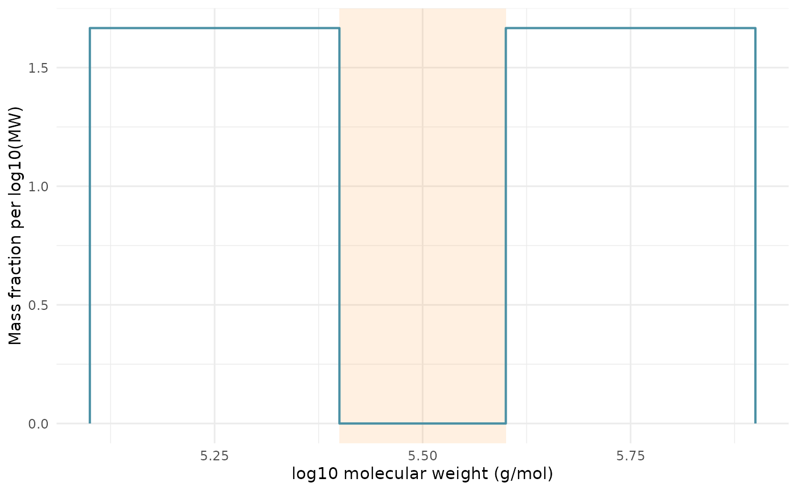

An integration window selects the part of a chromatogram used for molecular weight calculations. Exclusion regions remove intervals within that support. The same selection applies to molecular weight averages, fractions, and distributions.
This example uses synthetic, uniformly concentrated material at constant flow. The signal is proportional to mass concentration, and the supplied standards define a decreasing log10 molecular-weight calibration in g/mol. The example demonstrates numerical selection; it does not qualify an instrument or identify which intervals should be excluded from a real sample.
Build a complete recipe
axis <- seq(0, 10, by = 0.1)
curve <- new_measure_tbl(axis, rep(1, length(axis)))
data <- tibble::tibble(sample_id = "sample")
data$ri <- new_measure_list(list(curve))
standards <- data.frame(location = c(0, 5, 10), log_mw = c(6, 5.5, 5))The window keeps elution times 1 through 9. The integration exclusion removes times 4 through 6, leaving two separate intervals. The helper below builds an ordinary recipe so subsequent examples can change one selection explicitly.
selected_recipe <- function(
data,
integration_range = NULL,
regions = tibble::tibble(start = 4, end = 6)
) {
recipe(~ ., data = data) |>
update_role(sample_id, new_role = "id") |>
step_sec_conventional_cal(
measures = "ri",
standards = standards,
fit_type = "linear",
extrapolation = "none"
) |>
step_sec_integration_window(
measures = "ri", start = 1, end = 9, auto_detect = FALSE
) |>
step_sec_exclude_regions(
measures = "ri", regions = regions, purpose = "integration"
) |>
step_sec_mw_averages(
measures = "ri", integration_range = integration_range
) |>
step_sec_mw_fractions(
measures = "ri", cutoffs = 10^5.5,
integration_range = integration_range
) |>
step_sec_mw_distribution(
measures = "ri", type = "both", n_points = 60,
integration_range = integration_range
)
}
fit <- prep(selected_recipe(data))
result <- bake(fit, new_data = NULL)
result |>
dplyr::select(sample_id, mw_mn, mw_mw, mw_dispersity, dplyr::starts_with("frac_"))
#> # A tibble: 1 × 6
#> sample_id mw_mn mw_mw mw_dispersity frac_below_316227.766016838
#> <chr> <dbl> <dbl> <dbl> <dbl>
#> 1 sample 264898. 377503. 1.43 0.5
#> # ℹ 1 more variable: frac_above_316227.766016838 <dbl>The calibration step records which MW curve belongs to
ri; the three consumers select that curve. Signal and
calibration locations must align. Selected boundaries between samples
are interpolated: concentration linearly, and MW in the declared scale
of its curve. Calibration is never extrapolated to fill missing
positive-mass support. A boundary must coincide with a finite MW sample
or be bracketed by finite samples. When a nominal calibration domain
ends between samples and extrapolation is disabled, select finite
sampled support; the unsampled endpoint strips are omitted rather than
assigned mass.
Each retained interval receives its own trapezoidal weights. No
trapezoid connects the two sides of an exclusion. Baseline-only
exclusions do not remove mass from these calculations;
purpose = "integration" and "both" do.
Read the selected distribution
The two retained intervals have equal mass. The cutoff is inside the excluded gap, so the below-cutoff fraction and the CDF plateau are both one half.
density <- result$ri_differential[[1]]
cdf <- result$ri_cumulative[[1]]
below_column <- grep("^frac_below_", names(result), value = TRUE)
area <- sum(diff(density$location) *
(head(density$value, -1) + tail(density$value, -1)) / 2)
gap <- cdf$location > 5.41 & cdf$location < 5.59
stopifnot(
isTRUE(all.equal(result[[below_column]], 0.5, tolerance = 1e-8)),
isTRUE(all.equal(area, 1, tolerance = 1e-8)),
all(abs(cdf$value[gap] - 0.5) < 1e-8),
!anyDuplicated(cdf$location)
)
cdf[gap, ]
#> <measure_tbl [14 x 2]>
#> # A tibble: 14 × 2
#> location value
#> <dbl> <dbl>
#> 1 5.41 0.5
#> 2 5.43 0.5
#> 3 5.44 0.5
#> 4 5.45 0.5
#> 5 5.47 0.5
#> 6 5.48 0.5
#> 7 5.49 0.5
#> 8 5.51 0.5
#> 9 5.52 0.5
#> 10 5.53 0.5
#> 11 5.55 0.5
#> 12 5.56 0.5
#> 13 5.57 0.5
#> 14 5.59 0.5
ggplot2::ggplot(density, ggplot2::aes(location, value)) +
ggplot2::annotate("rect", xmin = 5.4, xmax = 5.6,
ymin = -Inf, ymax = Inf, fill = "#FF9933", alpha = 0.15) +
ggplot2::geom_path(linewidth = 0.7, colour = "#4A90A4") +
ggplot2::labs(
x = "log10 molecular weight (g/mol)",
y = "Mass fraction per log10(MW)"
) +
ggplot2::theme_minimal()
At a discontinuity, the differential curve repeats a location to
store its one-sided values in row order. geom_path()
preserves those vertical jumps. The CDF has unique locations and is
suitable for regular interpolation. n_points specifies a
target regular grid; support boundaries are added when needed, so a
selected distribution can contain additional rows.
When mw_range displays only part of the distribution,
normalization still uses the total selected mass. Cropping a plot does
not renormalize its visible portion to one. Fractions apply their cutoff
to sampled MW values; resolution near a cutoff still matters.
Override a stored window
An explicit integration_range takes precedence over the
row’s stored window. Integration-purpose exclusions always apply to the
resulting range.
override <- bake(prep(selected_recipe(data, integration_range = c(0, 3))),
new_data = NULL)
tibble::tibble(
selection = c("Stored window minus exclusion", "Explicit range 0 to 3"),
mw = c(result$mw_mw, override$mw_mw)
)
#> # A tibble: 2 × 2
#> selection mw
#> <chr> <dbl>
#> 1 Stored window minus exclusion 377503.
#> 2 Explicit range 0 to 3 722137.Keep selection attached to the sample
step_sec_exclude_regions() can match regions by
sample_id. Consumers read each row’s current metadata when
baking, including after serialization and reordering.
samples <- tibble::tibble(sample_id = c("A", "B"))
samples$ri <- new_measure_list(list(curve, curve))
regions <- tibble::tibble(
sample_id = c("A", "B"), start = c(4, 3), end = c(6, 4)
)
trained <- unserialize(serialize(prep(selected_recipe(samples, regions = regions)), NULL))
original <- bake(trained, new_data = NULL)
reordered <- bake(trained, new_data = samples[2:1, ])
stopifnot(isTRUE(all.equal(original$mw_mw, rev(reordered$mw_mw))))
reordered |> dplyr::select(sample_id, mw_mw)
#> # A tibble: 2 × 2
#> sample_id mw_mw
#> <chr> <dbl>
#> 1 B 350774.
#> 2 A 377503.If the selection contains no retained support, moments and fractions
are NA and distribution curves are empty.